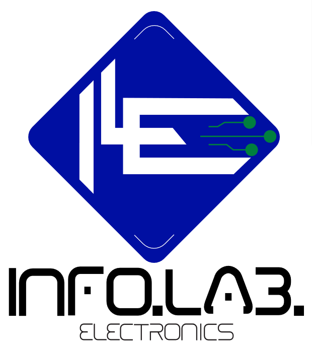
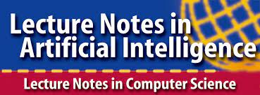

About
The 20th European Conference on Multi-Agent Systems (EUMAS 2023) will be located at the University of Naples (September 14-15th, 2023). EUMAS is the primary European forum for researchers interested in the theory and practice of autonomous agents and multi-agent systems. We are honoured to host the 20th edition of this conference in person, in Napoli, one of Europe’s most stunning cities. EUMAS 2023 is an EURAMAS designated event which follows the tradition of previous editions (Oxford 2003, Barcelona 2004, Brussels 2005, Lisbon 2006, Hammamet 2007, Bath 2008, Agia Napa 2009, Paris 2010, Maastricht 2011, Dublin 2012, Toulouse 2013, Prague 2014, Athens 2015, Valencia 2016, Evry 2017, Bergen 2018, Thessaloniki 2020, Israel (online) 2021, Düsseldorf 2022), and aims to encourage and support activity in the research and development of multi-agent systems, in academic and industrial effort. EUMAS enables researchers to meet, present challenges, preliminary and mature research results in an open environment. EUMAS 2023 features formal proceedings published as part of the Lecture Notes in Computer Science (LNCS) series of Springer.
Call for papers
What can be submitted?
EUMAS 2023 welcomes original, unpublished papers including improved versions of extended abstracts or rejected papers from AAMAS, AAAI and IJCAI 2023. The submission should describe work that has not been previously published, accepted for publication, nor is currently under review by another conference or journal.
Formatting and Length
All submissions will be peer-reviewed in a single blind fashion. Submission should be at most 15 pages long, with any number of pages for references and, if needed, a clearly marked appendix and be formatted according to Springer’s LNCS format. For templates and instructions for authors, see Conference proceedings guidelines. Authors must submit their papers through the EUMAS 2023 Easychair submission site as a single PDF file.
Important dates
Deadline for papers submission (extended): 29 May 2023 (AoE, UTC-12)Notification sent to authors: 5 July 2023 (AoE, UTC-12)Camera ready papers: 20 July 2023 (AoE, UTC-12)- EUMAS conference: 14-15 September 2023
PhD day
Important dates
Paper Submission Deadline: 15th July 2023 (AoE, UTC-12)Paper Notification: 20th July 2023 (AoE, UTC-12)Camera ready papers: 24th July 2023 (AoE, UTC-12)
Phd Students (and also former PhD students that completed their PhD in 2022) are invited to submit a Short Paper to EUMAS 2023. The accepted papers will be be presented during the EUMAS 2023 PhD Day (which will be held on the 13th of September), and will be included in EUMAS 2023 proceedings. All PhD day authors will give an highlight talk of their work (in 5 minutes) and then present it as a poster. There will be a best presentation award (based on the talk and the poster), which will come with a monetary prize. All submissions will be peer-reviewed in a single blind fashion. Specifically, all submissions should not be anonymized. Submission should be at most 5 pages long, with 2 additional page only for references, and be formatted according to Springer’s LNCS format. For templates and instructions for authors, see Conference proceedings guidelines. Authors must submit their papers through the EUMAS 2023 Easychair submission site as a single PDF file.
Accepted papers
- Eyal Briman and Nimrod Talmon. Multiple Attribute List Aggregation: Its Application to Democratic Playlist Editing
- Maaike Venema-Los, Zoé Christoff and Davide Grossi. On the Graph Theory of Majority Illusions
- Alexandre Perles, Kamaldeep Singh Oberoi, Elsy Kaddoum, Valérie Camps, Stéphanie Combettes and Marie-Pierre Gleizes. Adaptive Multi-Agent System for Detecting User's Regular Movement Behaviour for MaaS Applications
- Michael Vezina, Babak Esfandiari, Sandra Morley and Francois Schwarzentruber. Qualitative Uncertainty Reasoning in AgentSpeak
- Martina Baiardi, Samuele Burattini, Giovanni Ciatto and Danilo Pianini. JaKtA: BDI agent-oriented programming in pure Kotlin
- Zeinab Namakizadeh Esfahani, Débora Engelmann, Angelo Ferrando, Massimiliano Margarone and Viviana Mascardi. Integrating Ontologies and Cognitive Conversational Agents in On2Conv
- Haolin Sun and Yves Lespérance. Exploiting Reward Machines with Deep Reinforcement Learning in Continuous Action Domains
- Giuseppe Petrosino, Stefania Monica and Federico Bergenti. A Comprehensive Presentation of the Jadescript Agent-Oriented Programming Language
- Omar Inverso, Salvatore La Torre, Gennaro Parlato and Ermenegildo Tomasco. Verifying Programs by Bounded Tree-width Behavior Graphs
- Giuseppe De Giacomo and Giuseppe Perelli. Behavioral QLTL
- Matteo Acclavio and Davide Catta. Lorenzen-style strategies as proof-search strategies
- Elfia Bezou Vrakatseli, Benedikt Brueckner and Luke Thorburn. SHAPE: A Framework for Evaluating the Ethicality of Influence
- Alejandra López de Aberasturi Gómez, Jordi Sabater Mir and Carles Sierra. Modelling Group Performance in Educational Multiagent Systems: Introducing the CollabQuest Simulation Game
- Ruhollah Jamali and Sanja Lazarova-Molnar. Towards Developing an Agent-based Model of Price Competition in the European Pharmaceutical Parallel Trade Market
- Leandro Buss Becker, Anthony Downs, Craig Schlenoff, Justin Albrecht, Zeid Kootbally, Angelo Ferrando, Rafael C. Cardoso and Michael Fisher. Using a BDI Agent to Represent a Human on the Factory Floor of the ARIAC 2023 Industrial Automation Competition
- Giuseppe De Giacomo, Gianmarco Parretti and Shufang Zhu. Symbolic LTLf Best-Effort Synthesis
- Francesco Leofante and Alessio Lomuscio. Robust Explanations for Human-Neural Multi-agent Systems with Formal Verification
- Benjamin Aminof, Giuseppe De Giacomo, Antonio Di Stasio, Hugo Francon, Sasha Rubin and Shufang Zhu. LTLf Synthesis Under Environment Specifications for Reachability and Safety Properties
- Paolo Baldi. Logic-based approximations of preferences
- Aliyu Tanko Ali, Martin Leucker, Andreas Schuldei, Martin Sachenbacher and Leonard Stellbrink. A Comparative Analysis of Multi-Agent Simulation Platforms for Energy and Mobility Management
- Romain Demangeon, Catalin Dima and Daniele Varacca. Observational Preorders for Alternating Transition Systems
- Giovanni Varricchione, Natasha Alechina, Mehdi Dastani and Brian Logan. Synthesising Reward Machines for Cooperative Multi-Agent Reinforcement Learning
- Peter Stringer, Rafael C. Cardoso, Clare Dixon, Michael Fisher and Louise Dennis. Adaptive Cognitive Agents: Updating Action Descriptions and Plans
- Damian Kurpiewski and Wojciech Jamroga. Pretty Good Strategies and Where to Find Them
- Carlos Marín Lora and Miguel Chover. A multi-agent Sudoku using the wave function collapse
- Mahyar Sadeghi Garjan, Tommy Chaanine, Cecilia Pasquale, Vito Paolo Pastore and Angelo Ferrando. AGAMAS: A new Agent-Oriented Traffic Simulation framework for SUMO
- Luca Sabatucci, Agnese Augello, Giuseppe Caggianese and Luigi Gallo. Coordinating Systems of Digital Twins with Digital Practices
- Andrés Holgado-Sánchez, Joaquín Arias, Mar Moreno-Rebato and Sascha Ossowski. On admissible behaviours for goal-oriented decision-making of value-aware agents
- Andreas Kalaitzakis and Jérôme Euzenat. Beneficial multi-tasking in cultural knowledge evolution suggests knowledge transferability among tasks.
- Vincenzo Auletta, Diodato Ferraioli and Carmine Viscito. Election Manipulation on Social Networks with Abstention
- Samuele Burattini. Supporting Adaptive Multi-Agent Systems with Digital Twins Environments
- Martina Baiardi. A step forward to widespread BDI AOP: JaKtA
- Mashal Afzal Memon. A brief overview of an approach towards ethical decision-making
- Tephilla Prince. On Verifying Unbounded Client-Server Systems*
- Gabriel Ballot. Capacity ATL: Reasoning about Agent Profiles and Applications to Cybersecurity
- Andrés Holgado-Sánchez. Value-Awareness Engineering: Towards Learning Context-based Value Taxonomies
- Andrea Gatti. Virtual Environments via Natural Language Agents
- Silvia Stranieri. Reasoning about smart parking
- Federica Montesano. Towards the optimization of speculative PDES platforms in shared-memory multi-core machines
- Francesco Di Cosmo. Decidability Borders of Verification of Communicating Datalog Agents
- Gianmarco Parretti. LTLf Best-Effort Synthesis for Single and Multiple Goal and Planning Domain Specifications
- Elena Umili. Neurosymbolic Integration of Linear Temporal Logic in Non Symbolic Domains
- Mahyar Sadeghi Garjan. On Theoretical Questions of Machine Learning, Multi-Agent Systems, and Quantum Computing With Their Reciprocal Applications
- Rabeaeh Kiaghadi. Optimal rescue sequences in disastrous incidents
- Marco Favorito. Efficient Algorithms for LTLf Synthesis
- Luciana Silo. Agent Behavior Composition in Stochastic Settings
- Michał Tomasz Godziszewski. Computational Complexity of Election Control for Euclidean Preferences**
**The paper has not been accepted in the proceedings but it will be presented in Naples.
Programme
- 14:00-14:15: PhD day registration
-
- Francesco Di Cosmo. Decidability Borders of Verification of Communicating Datalog Agents
- Gianmarco Parretti. LTLf Best-Effort Synthesis for Single and Multiple Goal and Planning Domain Specifications
- Marco Favorito. Efficient Algorithms for LTLf Synthesis
- Luciana Silo. Agent Behavior Composition in Stochastic Settings
- Gabriel Ballot. Capacity ATL: Reasoning about Agent Profiles and Applications to Cybersecurity
- Elena Umili. Neurosymbolic Integration of Linear Temporal Logic in Non Symbolic Domains
- Michał Tomasz Godziszewski. Computational Complexity of Election Control for Euclidean Preferences
- Andrés Holgado-Sánchez. Value-Awareness Engineering: Towards Learning Context-based Value Taxonomies
- 15:05-15:35: Poster discussion
- 15:35-16:15 coffee break
- 16:15-17:30: Industrial round table
-
- Mashal Afzal Memon. A brief overview of an approach towards ethical decision-making
- Silvia Stranieri. Reasoning about smart parking
- Federica Montesano. Towards the optimization of speculative PDES platforms in shared-memory multi-core machines
- Rabeaeh Kiaghadi. Optimal rescue sequences in disastrous incidents
- Samuele Burattini. Supporting Adaptive Multi-Agent Systems with Digital Twins Environments
- Martina Baiardi. A step forward to widespread BDI AOP: JaKtA
- Andrea Gatti. Virtual Environments via Natural Language Agents
- Mahyar Sadeghi Garjan. On Theoretical Questions of Machine Learning, Multi-Agent Systems, and Quantum Computing With Their Reciprocal Applications
- 18:20-18:50: Poster discussion
- 18:50-19:00: closing PhD day
- 19:00-20:00: Welcome drink reception
- 8:20 - 8:50: Main conference registration
- 8:50 - 9:00: Welcome
- 9:00 - 10:00: Invited speaker: Ana Paiva
- 10:00 - 10:40: Coffee break
-
- Zeinab Namakizadeh Esfahani, Débora Engelmann, Angelo Ferrando, Massimiliano Margarone and Viviana Mascardi. Integrating Ontologies and Cognitive Conversational Agents in On2Conv
- Elfia Bezou Vrakatseli, Benedikt Brueckner and Luke Thorburn. SHAPE: A Framework for Evaluating the Ethicality of Influence
- Alejandra López de Aberasturi Gómez, Jordi Sabater Mir and Carles Sierra. Modelling Group Performance in Educational Multiagent Systems: Introducing the CollabQuest Simulation Game
- Ruhollah Jamali and Sanja Lazarova-Molnar. Towards Developing an Agent-based Model of Price Competition in the European Pharmaceutical Parallel Trade Market
- Andreas Kalaitzakis and Jérôme Euzenat. Beneficial multi-tasking in cultural knowledge evolution suggests knowledge transferability among tasks.
- Michael Vezina, Babak Esfandiari, Sandra Morley and Francois Schwarzentruber. Qualitative Uncertainty Reasoning in AgentSpeak
- 12:30 - 14:00: Lunch (buffet)
-
- Eyal Briman and Nimrod Talmon Multiple Attribute List Aggregation. Its Application to Democratic Playlist Editing
- Martina Baiardi, Samuele Burattini, Giovanni Ciatto and Danilo Pianini. JaKtA: BDI agent-oriented programming in pure Kotlin
- Giuseppe Petrosino, Stefania Monica and Federico Bergenti. A Comprehensive Presentation of the Jadescript Agent-Oriented Programming Language
- Leandro Buss Becker, Anthony Downs, Craig Schlenoff, Justin Albrecht, Zeid Kootbally, Angelo Ferrando, Rafael C. Cardoso and Michael Fisher. Using a BDI Agent to Represent a Human on the Factory Floor of the ARIAC 2023 Industrial Automation Competition
- Peter Stringer, Rafael C. Cardoso, Clare Dixon, Michael Fisher and Louise Dennis. Adaptive Cognitive Agents: Updating Action Descriptions and Plans
- 15:40 - 16:20: Coffee break
-
- Aliyu Tanko Ali, Martin Leucker, Andreas Schuldei, Martin Sachenbacher and Leonard Stellbrink. A Comparative Analysis of Multi-Agent Simulation Platforms for Energy and Mobility Management
- Carlos Marín Lora and Miguel Chover. A multi-agent Sudoku using the wave function collapse
- Mahyar Sadeghi Garjan, Tommy Chaanine, Cecilia Pasquale, Vito Paolo Pastore and Angelo Ferrando. AGAMAS: A new Agent-Oriented Traffic Simulation framework for SUMO
- Luca Sabatucci, Agnese Augello, Giuseppe Caggianese and Luigi Gallo. Coordinating Systems of Digital Twins with Digital Practices
- 18:00-22:00: Social event.
- 8:45 - 9:00: Main conference registration
- 9:00 - 10:00 Invited speaker: Orna Kupferman
- 10:00 - 10:40: Coffee break
-
- Giuseppe De Giacomo and Giuseppe Perelli. Behavioral QLTL
- Matteo Acclavio and Davide Catta. Lorenzen-style strategies as proof-search strategies
- Romain Demangeon, Catalin Dima and Daniele Varacca. Observational Preorders for Alternating Transition Systems
- Andrés Holgado-Sánchez, Joaquín Arias, Mar Moreno-Rebato and Sascha Ossowski. Value-alignment strategies for goal-oriented decision-making
- 12:00 - 12:45: EURAMAS meeting
- 12:45 - 14:00: Lunch (buffet)
-
- Haolin Sun and Yves Lespérance. Exploiting Reward Machines with Deep Reinforcement Learning in Continuous Action Domains
- Giuseppe De Giacomo, Gianmarco Parretti and Shufang Zhu Symbolic. LTLf Best-Effort Synthesis
- Francesco Leofante and Alessio Lomuscio. Robust Explanations for Human-Neural Multi-agent Systems with Formal Verification
- Benjamin Aminof, Giuseppe De Giacomo, Antonio Di Stasio, Hugo Francon, Sasha Rubin and Shufang Zhu. LTLf Synthesis Under Environment Specifications for Reachability and Safety Properties
- Giovanni Varricchione, Natasha Alechina, Mehdi Dastani and Brian Logan. Synthesising Reward Machines for Cooperative Multi-Agent Reinforcement Learning
- 15:40 - 16:10: Coffee break
-
- Vincenzo Auletta, Diodato Ferraioli and Carmine Viscito. Election Manipulation on Social Networks with Abstention
- Maaike Venema-Los, Zoé Christoff and Davide Grossi. On the Graph Theory of Majority Illusions
- Omar Inverso, Salvatore La Torre, Gennaro Parlato and Ermenegildo Tomasco. Verifying Programs by Bounded Tree-width Behavior Graphs
- Paolo Baldi. Logic-based approximations of preferences
- Damian Kurpiewski and Wojciech Jamroga. Pretty Good Strategies and Where to Find Them
- 17:50 - 18:00 Firewall
Keynote Speakers
Prof. Orna Kupferman is a faculty member at the School of Computer Science and Engineering, The Hebrew University. She received her Ph.D. in 1995 from the Technion. Her research areas cover the theoretical foundations of the formal verification and synthesis of computer systems, with a focus on automata theory and game theory and their applications. These days, Orna joins hundreds of thousands of Israelies in a struggle for Israel's democracy.
Prof. Ana Paiva is a Professor of Computer Science at Instituto Superior Técnico, University of Lisbon investigating the creation of intelligent interactive systems by designing “social agents” that can interact with humans in a natural and social manner. She is also a fellow at the Radcliffe Institute for Advanced Study at Harvard University. Over the years she has addressed this problem by engineering social agents that try to exhibit specific social capabilities, including non-verbal behavior, empathy, personality, culture adaptation, and collaboration, among others. Her more recent research combines methods from artificial intelligence with social modelling to study hybrid societies of humans and machines. In particular she is investigating how to engineer agents that lead to more prosocial and altruistic societies.
She has published extensively and received best paper awards in several conferences, notably, she won the Blue Sky Awards at the AAAI in 2018. She has further advanced the area of artificial intelligence and social agents worldwide, having served for the Global Agenda Council in Artificial Intelligence and Robotics of the World Economic Forum and as a member of the Scientific Advisory Board of Science Europe. She is a AAAI and a EurAI fellow.
Awards
Special Issue
As for previous year editions, we plan to select the best papers for a special issue in SN Computer Science . Also, the top three accepted papers will have the opportunity to submit an extended versions of their papers for a fast-tracked review process at JAAMAS.
Best Paper
We plan to select the EUMAS-2023 Best Paper Award and the Best Student Paper Award (i.e., at least one of the authors is a student at the submission deadline). The Best Paper Award will be accompanied by a monetary prize of 500 euros, while the Best Student Paper Award will receive 250 euros. The winners will be announced at the conference.
Committee
- Vadim Malvone (Télécom Paris)
- Aniello Murano (University of Naples Federico II)
- Angelo Ferrando (University of Genova)
- Munyque Mittelmann (University of Naples Federico II)
- Marco Aruta
- Davide Catta
- Francesco Chiariello
- Angelo Ferrando
- Alfredo Laino
- Giulia Luongo
- Vadim Malvone (co-chair)
- Munyque Mittelmann
- Aniello Murano (co-chair)
- Silvia Stranieri
- Alessandro Abate (University of Oxford)
- Natasha Alechina (Utrecht University)
- Francesco Amigoni (Politecnico di Milano)
- Carlos Areces (FaMAF, Universidad Nacional de Córdoba)
- Guy Avni (University of Haifa)
- Reyhan Aydogan (Delft University of Technology)
- Matteo Baldoni (Diparti mento di Informatica, Univ. di Torino)
- Cristina Baroglio (Dipartimento di Informatica, Università di Torino)
- Nick Bassiliades (Aristotle University of Thessaloniki)
- Francesco Belardinelli (Imperial College London)
- Raphaël Berthon (Université Libre de Bruxelles)
- Dietmar Berwanger (CNRS and Université Paris-Saclay)
- Antonis Bikakis (University College London)
- Vittorio Bilo' (University of Salento)
- Filippo Bistaffa (IIIA-CSIC)
- Thomas Bolander (Technical University of Denmark)
- Vicent Botti (Universitat Politècnica de València)
- Robert Bredereck (TU Clausthal)
- Valentin Cassano (FaMAF, Universidad Nacional de Cordoba, Consejo Nacional de Investigaciones Cientificas y Tecnologicas)
- Cristiano Castelfranchi (Institute of Cognitive Sciences and Technologies)
- Paul Davidsson (Malmö University)
- Louise Dennis (University of Manchester)
- João Dias
- Piotr Faliszewski (AGH University of Science and Technology)
- Angelo Ferrando (University of Genova)
- Nicoletta Fornara (Università della Svizzera Italiana)
- Tim French (The University of Western Australia)
- Maira Gatti de Bayser (IBM)
- Raffaella Gentilini (University of Perugia)
- Charlotte Gerritsen (Vrije Universiteit Amsterdam)
- Nicola Gigante (Free University of Bozen-Bolzano, Italy)
- Rica Gonen (Yahoo!)
- Valentin Goranko (Stockholm University)
- Umberto Grandi (University of Toulouse)
- Davide Grossi (University of Groningen)
- Dimitar Guelev (Bulgarian Academy of Sciences)
- Zahia Guessoum (LIP6, Universit de Paris 6 and CReSTIC, Université de Reims Champagne Ardenne)
- Julian Gutierrez (Monash University)
- Magdalena Ivanovska (BI Norwegian Business School)
- Franziska Klügl (Örebro University)
- Panagiotis Kouvaros (Imperial College London)
- Martin Lackner (Vienna University of Technology)
- Stephane Le Roux (ENS Paris-Saclay)
- Marin Lujak (University Rey Juan Carlos)
- Jerusa Marchi (Federal University of Santa Catarina)
- Nicolas Markey (IRISA, CNRS & INRIA & Univ. Rennes 1)
- Francisco S. Melo (Instituto Superior Tecnico/INESC-ID)
- Jakub Michaliszyn (University of Wroclaw)
- Marco Montali (KRDB Research Centre, Free University of Bozen-Bolzano)
- Pavel Naumov (University of Southampton)
- Gethin Norman (University of Glasgow)
- Andrea Omicini (Alma Mater Studiorum–Università di Bologna)
- Nir Oren (University of Aberdeen)
- Wojciech Penczek (Institute of Computer Science of PAS)
- Laurent Perrussel (IRIT - Universite de Toulouse, France)
- Mickael Randour (F.R.S.-FNRS & UMONS - Université de Mons)
- Anna Helena Reali Costa (Universidade de São Paulo)
- Rasmus K. Rendsvig (University of Copenhagen)
- Alessandro Ricci (University of Bologna)
- Juan Antonio Rodriguez Aguilar (IIIA-CSIC)
- Rosaldo Rossetti (University of Porto)
- Jörg Rothe (Heinrich-Heine-Universität Düsseldorf)
- Emilio Serrano (Universidad Politécnica de Madrid)
- Sonja Smets (University of Amsterdam)
- Nikolaos Spanoudakis (Technical University of Crete)
- Sharadhi Alape Suryanarayana (Bar Ilan University)
- Nimrod Talmon (Ben-Gurion University)
- Paolo Turrini (University of Warwick)
- Leon van der Torre (University of Luxembourg)
- Wiebe van der Hoek (University of Liverpool)
- Serena Villata (CNRS - Laboratoire d'Informatique, Signaux et Systèmes de Sophia-Antipolis)
- George Vouros (University of Piraeus)
- Bozena Wozna Szczesniak
- Neil Yorke Smith (Delft University of Technology)
- Martin Zimmermann (Aalborg University)
Registration
For the registration complete the following form.
For the payment, you can do a bank transfer at the following bank account:
Account: Centro di Servizi Metrologici Avanzati (CeSMA) Università degli Studi di Napoli Federico II
Bank: Intesa Sanpaolo SpA FILIALE NAPOLI 90-66156 VIALE AUGUSTO, 46/50
IBAN: IT40F0306903497100000046053
SWIFT/BIC: BCITITMM
Description: EUMAS2023 - [Full name]
Early registration 290€ (bank transfer done before 31 July) - Late registration 340€
Social dinner 50€ (14 September - registration available until 31 August)
PhD Day registration 150€ (it includes 13-14 September) - Additional day (15 September) 140€
For each paper it is necessary to have an author registration. In addition, for each author it is possible to register only one paper.
Venue
If you are not familiar yet with Naples, here are some advices you may follow to reach the venue from Train Station or Airport.
Sponsors (in progress)




Contact Information
Aniello Murano
Università degli Studi di Napoli Federico II
Dipartimento di Ingegneria Elettrica e Tecnologie dell'Informazione (DIETI)
Director of the Automated STrategic REAsoning Lab (ASTREA)
Via Claudio, 21 - 80125 Napoli, ITALY.
https://people.na.infn.it/~murano
Vadim Malvone
Télécom Paris
Département: Informatique et Réseaux (INFRES)
Équipe: Autonomous and Critical Embedded Systems (ACES)
19 Place Marguerite Perey, 91120 Palaiseau
https://vadimmalvone.github.io
© 2023 EUMAS